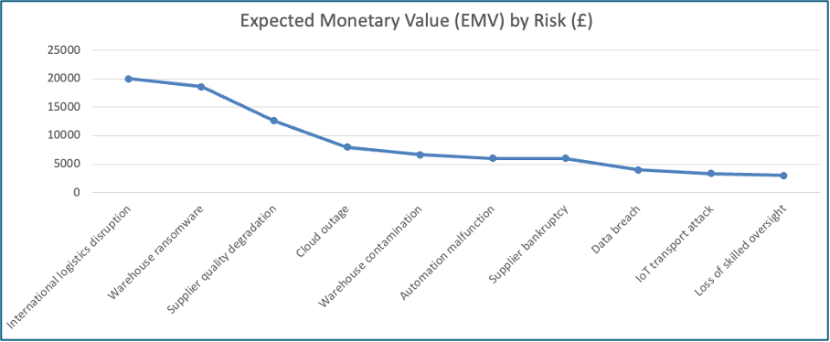
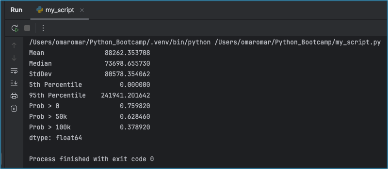

Unit 11: Future Trends in Security and Risk Management
EMV Quantitative Results
| Code | Risk | Category | Probability | Mean Loss | EMV (£) | Source |
|---|---|---|---|---|---|---|
| Q1 | Automation malfunction | Quality | 0.15 | 40000.0 | 6000.0 | Estimate |
| Q2 | Supplier quality degradation | Quality | 0.2 | 63333.33 | 12666.67 | (FA0, 2024) |
| Q3 | Warehouse contamination | Quality | 0.1 | 66666.67 | 6666.67 | Estimate |
| Q4 | Production data integrity breach | Quality | 0.08 | 50000.0 | 4000.0 | (ENISA, 2023) |
| Q5 | Loss of skilled oversight | Quality | 0.12 | 25000.0 | 3000.0 | Estimate |
| S1 | International logistics disruption | Supply | 0.25 | 80000.0 | 20000.0 | (World Bank, 2023) |
| S2 | Warehouse ransomware | Supply | 0.18 | 103333.33 | 18600.0 | (ENISA, 2023) |
| S3 | Cloud outage | Supply | 0.05 | 160000.0 | 8000.0 | Estimate |
| S4 | Supplier bankruptcy | Supply | 0.1 | 60000.0 | 6000.0 | (Gartner, 2024) |
| S5 | Transportation IoT attack | Supply | 0.08 | 41666.67 | 3333.33 | (ENISA, 2023) |
Table 01: Expected Monetary Value (EMV) of key Risks.
Expected Annual Loss (EMV) by Risk

Figure 01: Expected Annual Loss (EMV) by Risk
Monte Carlo Simulation Results
| Category | Mean (£) | Median (£) | Std. Dev (£) | 5th Percentile (£) | 95th Percentile (£) | Prob (>0) | Prob (>£50k) | Prob (>£100k) |
|---|---|---|---|---|---|---|---|---|
| Total | 88,219 | 75,263 | 79,059 | 0 | 236,168 | 0.76 | 0.64 | 0.38 |
| Quality | 32,088 | 13,406 | 39,497 | 0 | 109,895 | 0.50 | 0.32 | 0.07 |
| Supply | 56,132 | 38,074 | 68,194 | 0 | 191,773 | 0.52 | 0.47 | 0.23 |
Table 02: Summary of Monte Carlo simulation results (50,000 iterations).

Figure 02: Output of Python Monte Carlo Simulation (50,000 iterations)
Monte Carlo Simulation Python Script
import numpy as np
import pandas as pd
# Define the 10 risks
risks = [
{"code": "Q1", "prob": 0.15, "mean": 40000, "std": 10000},
{"code": "Q2", "prob": 0.20, "mean": 63333, "std": 15000},
{"code": "Q3", "prob": 0.10, "mean": 66667, "std": 20000},
{"code": "Q4", "prob": 0.08, "mean": 50000, "std": 10000},
{"code": "Q5", "prob": 0.12, "mean": 25000, "std": 5000},
{"code": "S1", "prob": 0.25, "mean": 80000, "std": 25000},
{"code": "S2", "prob": 0.18, "mean": 103333, "std": 30000},
{"code": "S3", "prob": 0.05, "mean": 160000, "std": 40000},
{"code": "S4", "prob": 0.10, "mean": 60000, "std": 15000},
{"code": "S5", "prob": 0.08, "mean": 41667, "std": 10000},
]
# Simulation setup
n_iterations = 50000
results = []
# Run the Monte Carlo simulation
for _ in range(n_iterations):
total_loss = 0
for risk in risks:
if np.random.rand() < risk["prob"]:
loss = max(0, np.random.normal(risk["mean"], risk["std"]))
total_loss += loss
results.append(total_loss)
# Convert to DataFrame
df = pd.DataFrame({"Total Loss": results})
# Summary statistics
summary = {
"Mean": df["Total Loss"].mean(),
"Median": df["Total Loss"].median(),
"StdDev": df["Total Loss"].std(),
"5th Percentile": df["Total Loss"].quantile(0.05),
"95th Percentile": df["Total Loss"].quantile(0.95),
"Prob > 0": (df["Total Loss"] > 0).mean(),
"Prob > 50k": (df["Total Loss"] > 50000).mean(),
"Prob > 100k": (df["Total Loss"] > 100000).mean(),
}
print(pd.Series(summary))